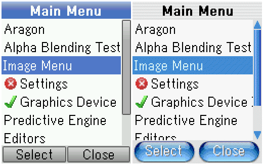
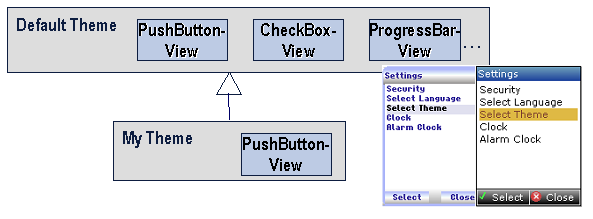
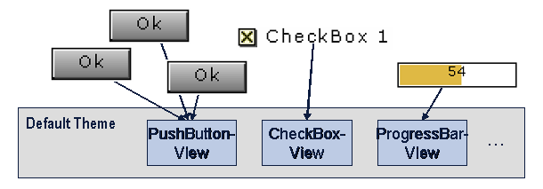

Themes Overview
1 Introduction
A Theme is a container for view-objects. Look of each component is defined by an instance of a view-object. For each component type (e.g. PushButton) there is a corresponding view type (e.g. PushButtonView). The look of a component changes automatically when changing the theme and this changing of theme can be done during runtime.
2 Theme-configuration
APOXI allows having a variable number of themes, which define the look of the used components like windows, push-buttons, softkeybars etc. Per default APOXI offers the themes Default Theme and Foggy Theme, which are located in APOXI/GlobalThemes. To use a theme, it must be embedded into the implementation of the class ThemeConfig, which specifies the theme-configuration.
 |
Figure 1. APOXI Themes
Every Theme derives from AbstractTheme and if derived from implemented Theme, not all views have to be re-implemented. This is shown in the following figure.
 |
3 Creating a New Theme
When creating a new theme, the following steps are necessary:
4 Implementing a View
All components of APOXI delegate the drawing to their view-object. All instances of a component may share one instance of a view. For example one instance of the pushbutton-view is owned by the Default Theme and all instances of a pushbutton will use this instance for drawing themselves as shown in the following figure.
 |
Figure 2. Implementing a View
The class Theme offers an abstract method GetPushButtonView(), which must return a pointer to an instance of the class PushButtonView.